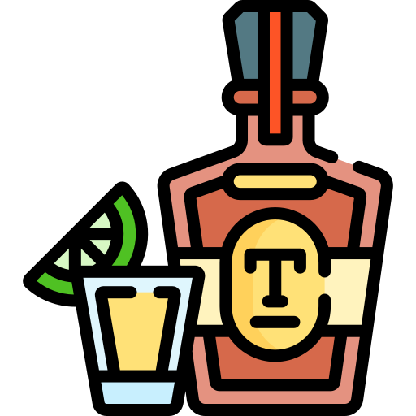
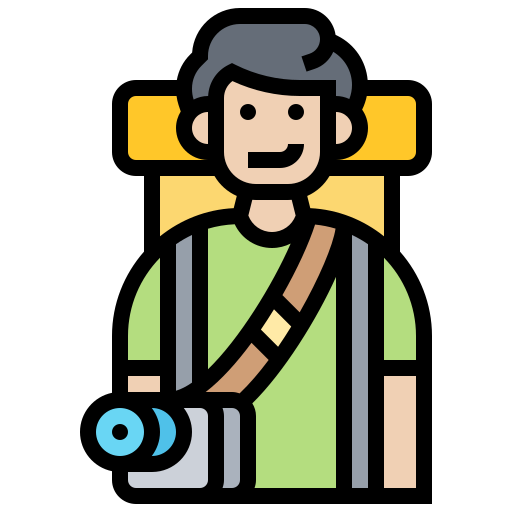

Bienvenido a Tequila
Tequila Jalisco, un pueblo lleno de cultura y tradición adentrate en esta aventura
Más Información¿Qué hacer en tequila?
En tequila puedes visitar las fábricas, restaurantes, centros turisticos, museos etc.
Más InformaciónRecorridos Turisticos
Los recorridos aqui es algo que se volvió muy buscado ya que te permite visitar varios lugares en un solo viaje
Más InformaciónRestaurantes
En tequila existen varios lugares donde puedes comer, te mostraremos los lugares que hay
Más Información